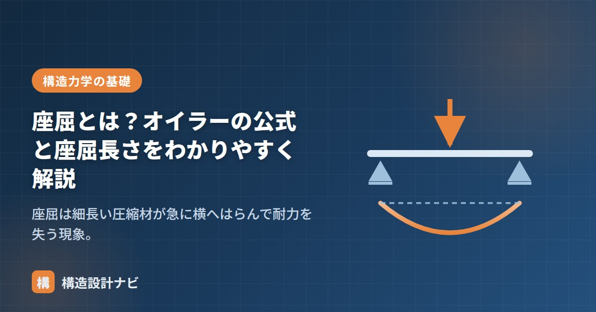

座屈とは？オイラーの公式と座屈長さをわかりやすく解説

細い物差しを両手で押すと、折れる前にふっと横にはらみます。これが座屈です。細長い圧縮材は、材料の強度に達するずっと手前で、横にはらんで耐力を失ってしまいます。柱やブレースの設計で必ず検討する、圧縮材の最重要テーマです。
座屈は「強度」ではなく「剛性」の問題
座屈は材料が壊れる現象ではなく、まっすぐな状態を保てなくなる不安定現象です。そのため座屈荷重は材料の強度（F値）には関係なく、曲げにくさ（EI）と長さで決まります。
式から読み取れるポイントは3つです。
- 長さの2乗で効く：座屈長さが2倍になると座屈荷重は1/4。
- I は弱いほうの軸で決まる：部材は曲げにくい方向ではなく、曲げやすい方向（弱軸まわり）に座屈する。
- 強度 F は式に入っていない：SS400を高強度鋼に変えても座屈荷重は上がらない（Eは鋼種によらず一定のため）。
座屈長さ Lk：支持条件で決まる「実質の長さ」
同じ長さの柱でも、端部の固定度によって座屈のしやすさは大きく変わります。これを「座屈長さ」という仮想の長さに換算して扱います。
図：端部の拘束が強いほど座屈長さは短くなり、座屈しにくくなる
| 支持条件 | 座屈長さ Lk | 座屈荷重（両端ピン比） |
|---|---|---|
| 両端固定 | 0.5L | 4倍 |
| 一端固定・他端ピン | 0.7L | 約2倍 |
| 両端ピン | L | 1（基準） |
| 一端固定・他端自由 | 2L | 1/4 |
細長比 λ：座屈しやすさの指標
実務では、座屈のしやすさを細長比 λで評価し、λ に応じて許容圧縮応力度を低減します。
断面二次半径 i は断面性能計算ツールで自動計算できます。λ には弱軸まわりの i（小さいほうの値）を使う点に注意してください。
- 座屈荷重は EI に比例し、Lk² に反比例する。
- 座屈は弱軸まわりに生じる。H形鋼の柱で弱軸方向に胴縁や間柱で拘束するのはこのため。
- 材料強度を上げても座屈荷重は変わらない。効くのは断面形状（I）と座屈長さ。
- ブレースの圧縮側が座屈で効かなくなるため、ブレース構造では引張側だけを当てにする設計（引張ブレース）も多い。
座屈荷重を左右する I の意味は「断面二次モーメントとは？」、E については「応力度とひずみ度・ヤング係数」をどうぞ。
ブレース材の座屈長さは、ガセットプレートの取り付き寸法や間柱による拘束の有無で実際の値が変わります。私は図面上のピン支持という前提だけで判断せず、接合部がどこまで回転を拘束しているかを合わせて確認するようにしています。
計算例：座屈荷重を実際に求める
数式だけではイメージしづらいので、実際の数値を入れて計算してみましょう。
条件：H-200×200×8×12（弱軸まわり I ＝ 1,600×10⁴ mm⁴）、長さ 4.0m の柱、両端ピン支持、鋼材のヤング係数 E ＝ 205,000 N/mm²
Pe ＝ π²EI / Lk² ＝ π² × 205,000 × 1,600×10⁴ ÷ 4,000²
＝ 3.14² × 205,000 × 16,000,000 ÷ 16,000,000
≒ 2,023,000 N ≒ 2,023 kN
次に、同じ柱の両端を固定した場合を計算します。座屈長さが Lk ＝ 0.5L ＝ 2,000mm になるので、
端部を固定するだけで、座屈荷重が4倍になりました。座屈長さが2乗で効くという式の意味が、数値で確認できます。実務で「柱の中間を胴縁や間柱で拘束する」「ブレースの中間に補剛材を入れる」といった工夫をするのは、この効果を狙ったものです。
横座屈：梁にも起きる座屈
座屈は柱だけの問題ではありません。曲げを受ける梁でも、横座屈（横倒れ座屈）という現象が起こります。
梁の上フランジは圧縮を受けるため、細長い圧縮材と同じように横にはらもうとします。これを防ぐには、圧縮側フランジを横方向に拘束することが有効です。実際の建物では、床スラブが上フランジに密着している場合や、小梁が一定間隔で取り付いている場合は横座屈が生じにくくなります。逆に、屋根の梁や工事中の状態など、上フランジが拘束されていない状況では横座屈の検討が必要になります。
よくある質問
Q1. 座屈しやすい部材はどうやって見分けますか？
細長比λ（＝座屈長さ÷断面二次半径）で判断します。λが大きいほど座屈しやすく、鋼構造では柱の細長比を200以下（一般部材は250以下）に制限しています。感覚的には、断面の小さい部材が長く伸びているほど危険です。特にブレースや間柱のような細い部材、そして弱軸方向に拘束のない柱は注意が必要です。
Q2. 高強度の鋼材を使えば座屈しにくくなりますか？
なりません。オイラーの座屈荷重の式にはヤング係数Eと断面二次モーメントIしか含まれず、材料強度Fは登場しないためです。しかも鋼材のヤング係数は、SS400でもSN490でもほぼ205,000N/mm²で変わりません。座屈対策として有効なのは、断面を大きくしてIを増やすか、補剛材を入れて座屈長さLkを短くすることです。
Q3. 実際の設計ではオイラーの式をそのまま使うのですか？
そのままは使いません。オイラーの式は、材料が弾性範囲にある細長い部材を前提とした理論値です。実際の部材には初期の曲がりや残留応力があり、また短く太い部材では座屈する前に材料が降伏します。そのため設計では、細長比λに応じて許容圧縮応力度を低減する規定を用います。λが小さい範囲では材料の降伏、大きい範囲ではオイラー座屈が支配する形になっています。
まとめ
- 座屈は細長い圧縮材が横にはらんで耐力を失う不安定現象。強度ではなく剛性（EI）の問題。
- オイラー式 Pe = π²EI/Lk²。座屈長さは両端固定0.5L〜一端固定他端自由2L。
- 細長比 λ = Lk/i で座屈しやすさを評価し、許容圧縮応力度を低減する。